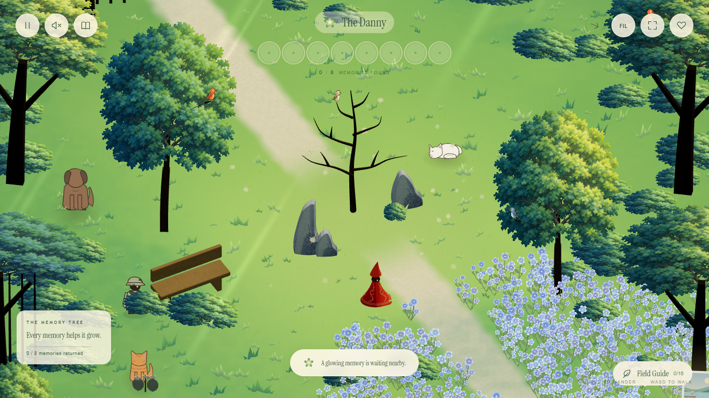
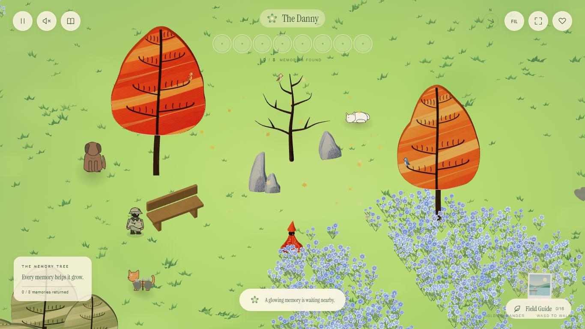
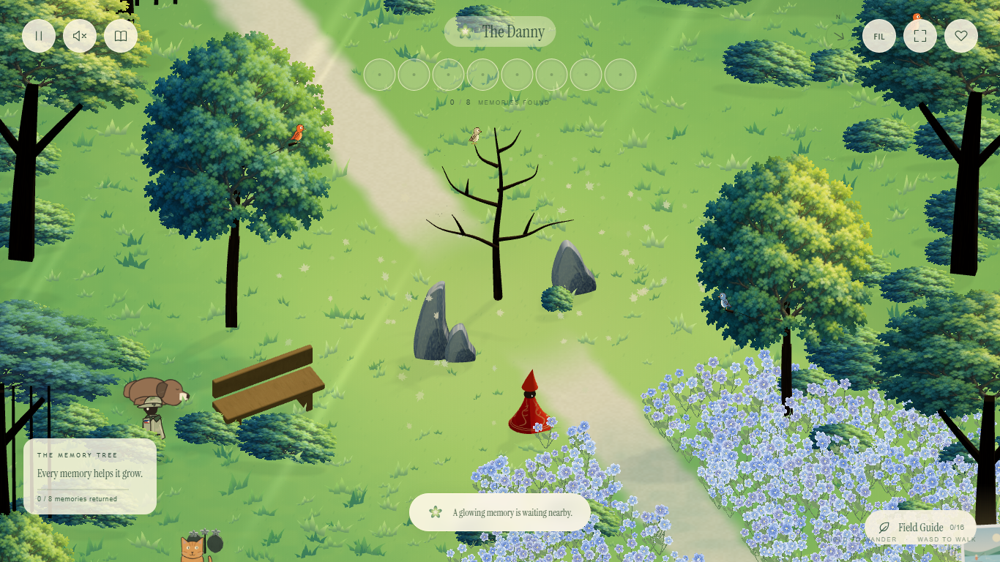
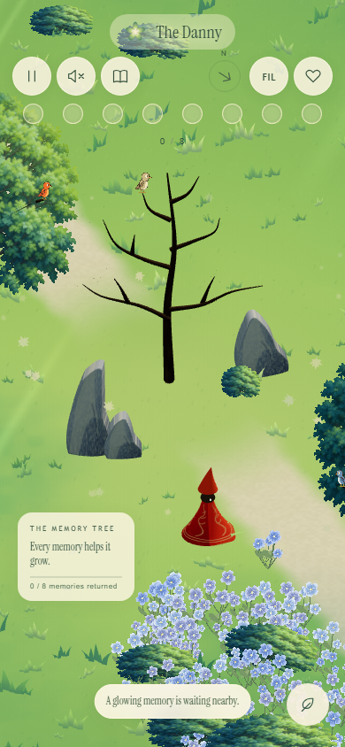

Light through the leaves.
Emerald shade, luminous green foliage, soft sun rays and a warm winding path. The blue flower fields, painted wildlife and glowing petal trail belong to this new forest.


Previous lime meadowSummer forestDrag the slider to compare the glade. Both versions keep the same traveler and close camera framing.
Walk among the blue flowers.
Grass and flowers yield as the traveler passes. Glowing blue petals lift from brushed flowers and softly fade.
View the sunlight with full shadows

Phone view

Original canopy artwork: saved painting and generation prompt and provenance. Generated with built-in imagegen.

Scenery and rendering checks · Vegetation physics checks · Petal checks